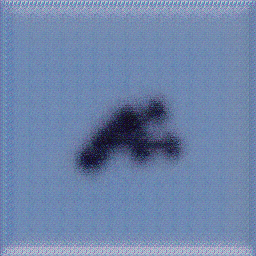
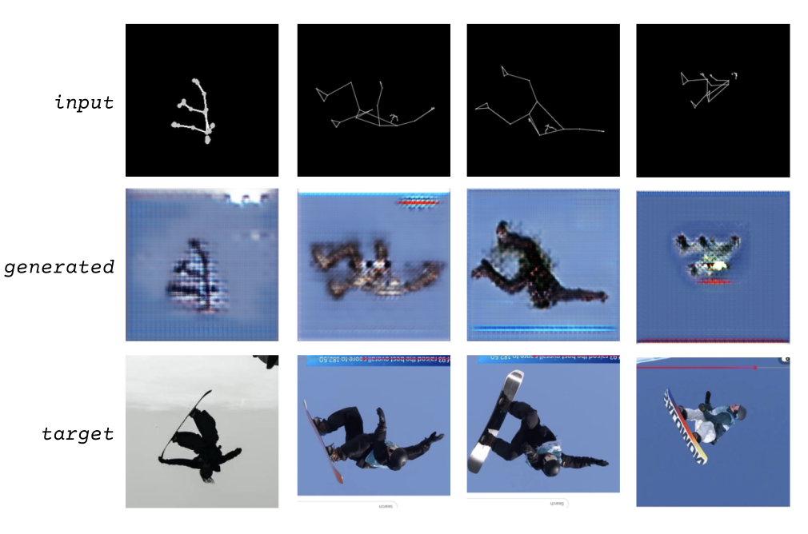

E. Williams
I wanted to explore the idea of riders mid-air in a moment that is so detached from what snowboarding actually feels like. You are reliant on snow, conditions, terrain, the environment. These images of riders separate from that inherent element, even without the board, isolating the human of it all, just making strange shapes with your body. My motivation stemmed from that curiosity, but also just desire. I just really wanted to look for photos and videos of folks fucking around on a snowboard. Any rider just wants more of those images in their mind, especially in North American Summer, and now I have new ones to mull over. I collected the images from magazines I found virtually, as well as taking stills from videos of my favorite riders. Some are images from big air competitions, halfpipe, or the terrain park.

